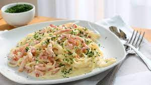

Spaghetti Carbonara

A delicious dish easy to prepare, with gourmet qualities within reach of the super market... or your kitchen. 9/10.
Ingredients
- Spaghetti
- Liquid cream
- Bacon
- Eggs
- Onion
- Olive oil
- Pepper
Steps
- Peel the onion and chop it. Sauté it in a pan with 2 tablespoons of oil for 10 minutes.
- Clean the bacon and cut it into small cubes. Add it to the onion and cook for 5 more minutes. Pour the cream, season with salt and pepper and continue cooking for 2 minutes.
- Cook the pasta in a saucepan with plenty of salted water for 9 minutes until al dente.
- Drain and add it to the previous preparation together with the beaten eggs. Stir for a few moments, until they begin to set.
- Divide the spaghetti among 4 bowls, season with a pinch of pepper, preferably freshly ground, and serve immediately, hot, sprinkled with grated cheese.